FAQ¶
The frequently asked questions, about:
- credits: can I get university credits for this course?
- eligibility, i.e. when to join the course
- preparation
- course teaching, i.e. how the course is conducted and ideas behind it
If your question is not answered here,
contact us 
Credits¶
Can I get University Credits for this course?¶
No.
We don't give formal credits for the course. That is up to your supervisor. You can ask for a certificate after the course that helps with the decisions.
Eligibility¶
I have never programmed before. Am I eligible?¶
Not yet (for your own good)!
This is not an introductory course on programming. Learners are expected to know basic programming concepts, such as variables and functions.
In this course, you will work together a lot. It will be likely to be noticed that you do not have programming experience yet, and you may feel bad about that. Take an introductory programming course first and then we hope to see you here again!
I am a non-Python programmer. Am I eligible?¶
Yes.
In the course, we will use Python as the workhorse language, as most of our learners have experience with Python.
You will write code in Python in exercises. To make that possible for non-Python programmers:
- code will be simple and/or copy-pasted
- learners are usually paired up, so that usually one of the learners knows Python.
- you may use a web search and/or AI to write (non-test) Python code: this course shows how to make sure that that code is correct
Preparation¶
How do I prepare?¶
See prerequisites for how to prepare.
Prerequisites¶
How do I install VS Code?¶
Download VS Code from its homepage.
How do I know I have VS Code installed?¶
You know if you have VS Code installed, if you can start the program.
How does that look like?
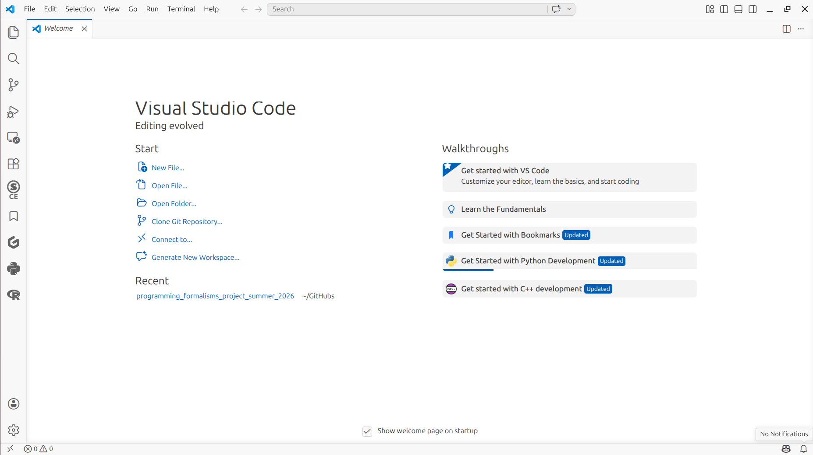
How do I install Git on my computer?¶
You have Git installed when you have VS Code installed.
How do I know I installed Git on my computer?¶
Start VS Code.
How does that look like?
If you see the 'Source control' panel at the left, you can assume Git is installed.
Where is that panel?
It is at the left side of the screen
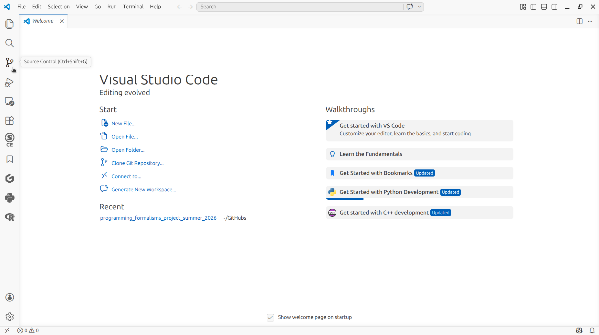
If you want to be really sure, then, follow the rest of the procedure.
In VS Code, create a new terminal.
How does that look like?
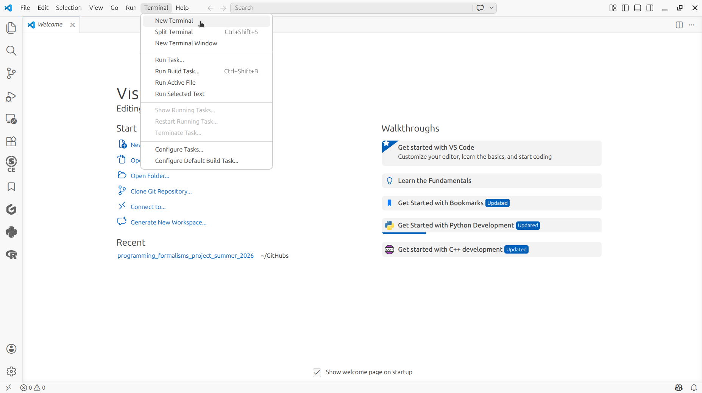
In the VS Code terminal, type:
You should see your Git version.
How does that look like?
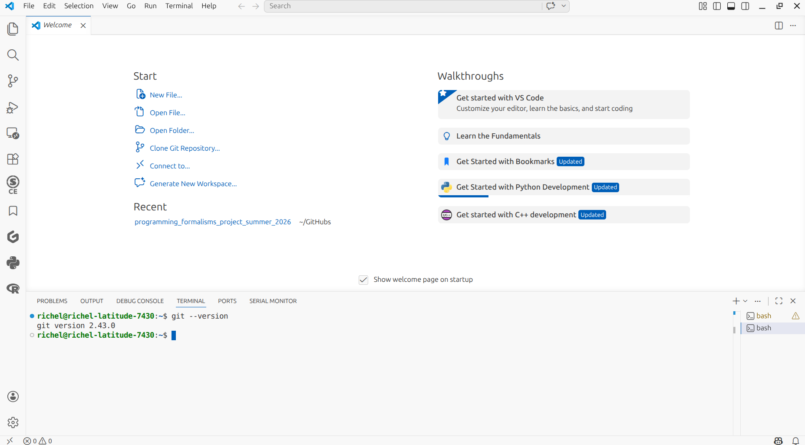
How do I configure Git on my computer?¶
Git is already configured on your computer.
You can consider to configure Git to ask you for a password every 10 hours. If you enjoy this, these two lines needed to be copy-pasted into a terminal:
git config --global credential.helper cache
git config --global credential.helper 'cache --timeout=36000'
Besides that, Git does indicate clearly when it needs you to make a choice: read what it states and then pick your favorite choice.
Regardless, below are some choices Git wants you to make.
Upon a commit, Git needs to know who you are. Below is an example of the two lines needed to be copy-pasted into a terminal:
Upon a merge, Git needs to know how you want to do so. Below is an example of the recommended choice to what needed to be copy-pasted into a terminal:
Upon editing a file, Git will use a text editor.
By default, Git uses the vim editor.
Below is the command to use VS Code instead.
How do I know I have Git configured on my computer?¶
You already have.
How do I get a GitHub account?¶
Go to the GitHub homepage. and click on 'Sign up' at the top right.
The free account is good enough for this course.
How do I know I have a GitHub account?¶
Go to the GitHub homepage and click on 'Log in' at the top right.
If you pass the login screen (you will be asked your username and password), you know you have a GitHub account.
How do I configure my GitHub account?¶
Your GitHub is already configured.
How do I install Python?¶
There are many ways.
The 'Python' VS Code documentation documents this well.
How do I know if I have Python installed?¶
By checking its version.
In VS Code, create a new terminal
How does that look like?
In the VS Code terminal, type:
If you see your Python version (i.e. not an error message), Python is installed.
How does that look like?
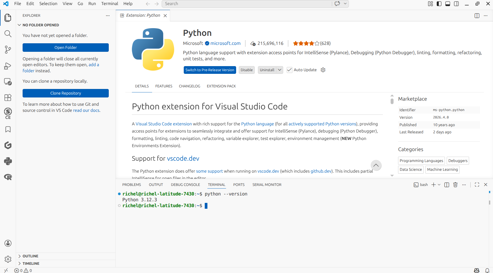
How do I run Python from VS Code?¶
You need to install the Python extension in VS Code. Here is a step-by-step guide.
In VS Code, click on the 'Extensions' panel.
Where is that panel?
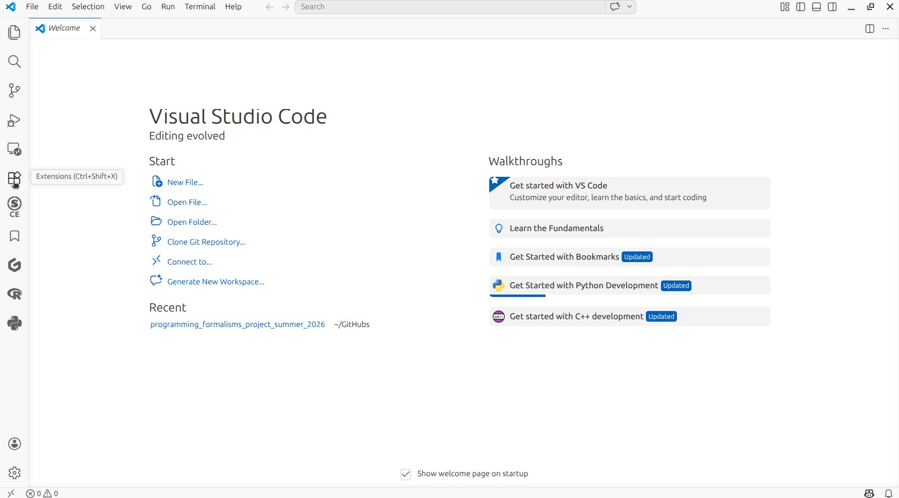
How does that look like?
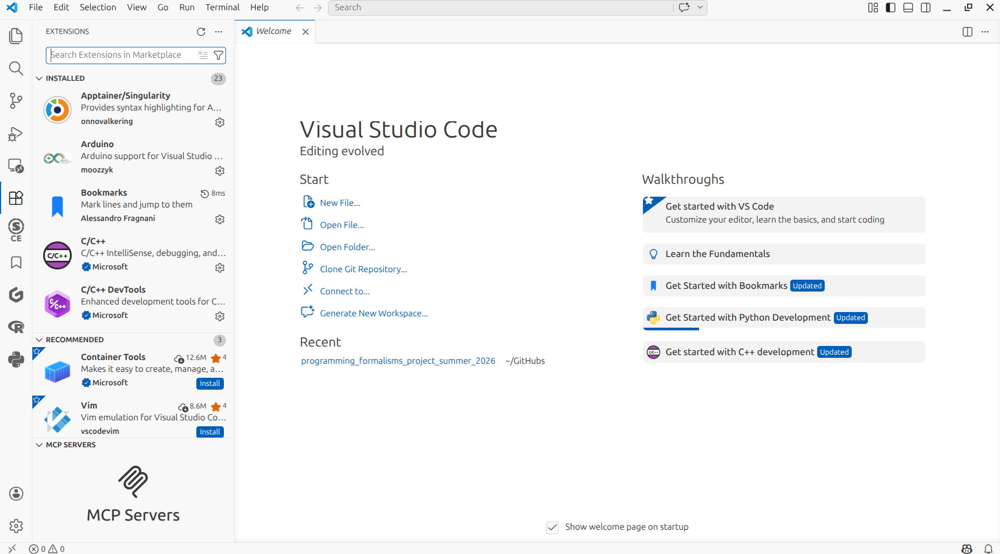
In the 'Extensions' panel, type 'Python' in the search box.
How does that look like?
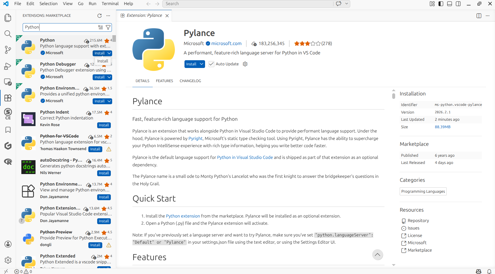
In the search results, click on 'Install' of the first result.
How does that look like?
You should now see that the Python extension is installed.
How does that look like?
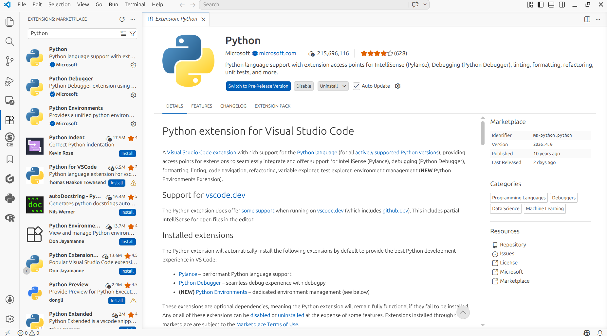
How can I check that I can run Python from VS Code?¶
By running a minimal Python script from VS Code. Below is the procedure to do so.
In VS Code, click on 'File | New file'
How does that look like?
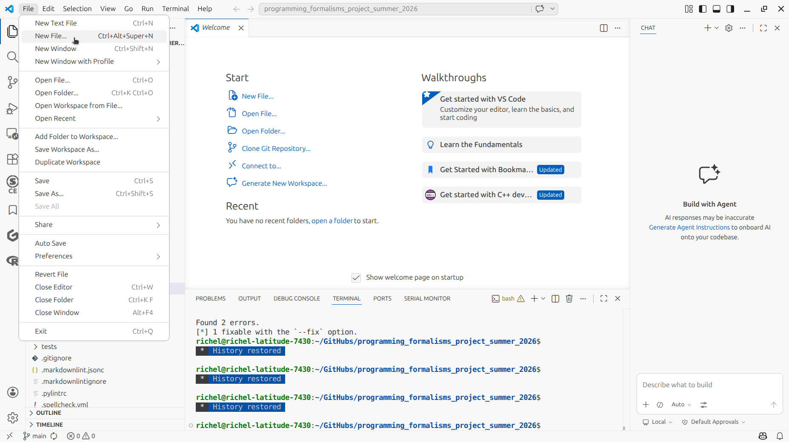
Type the file name hello_world.py.
How does that look like?
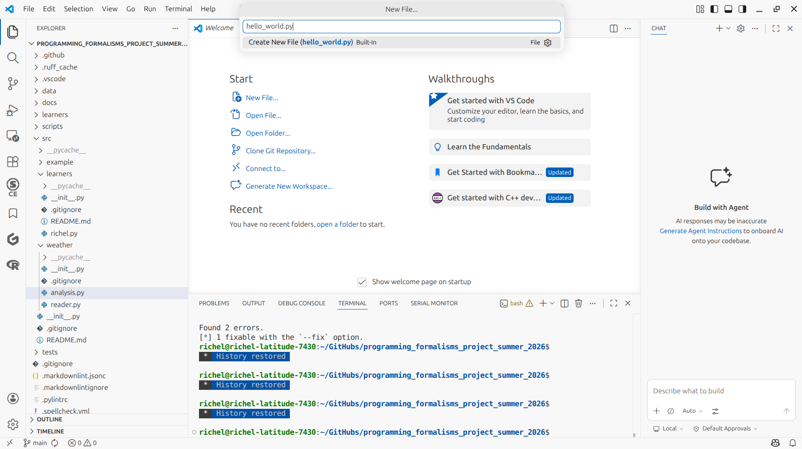
Save the to-be-created file somewhere.
How does that look like?
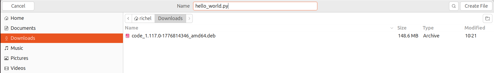
When the file is created, then VS Code offers to install a Python extension if you have not done so yet. Do install that extension when asked :-)
How does that look like?
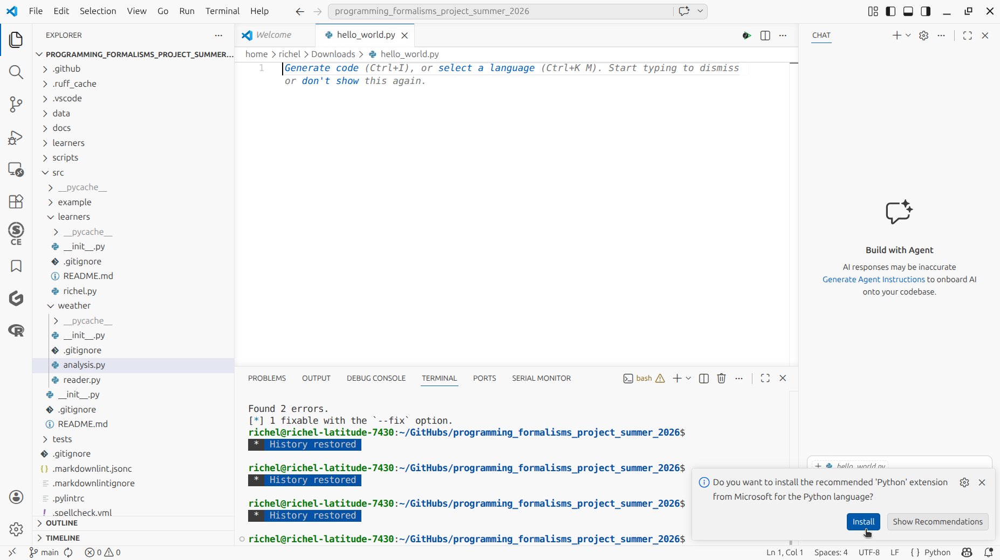
Copy-paste the following code into your Python script:
How does that look like?
'Run' is at the top-left of your screen.
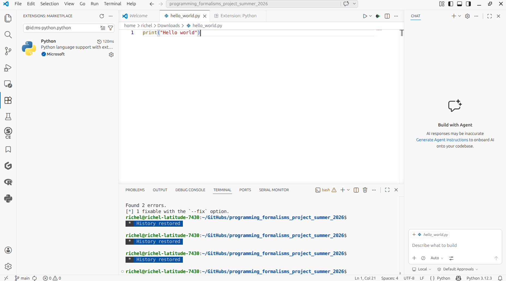
Click on 'Run'.
How does that look like?
'Run' is at the top-left of your screen.
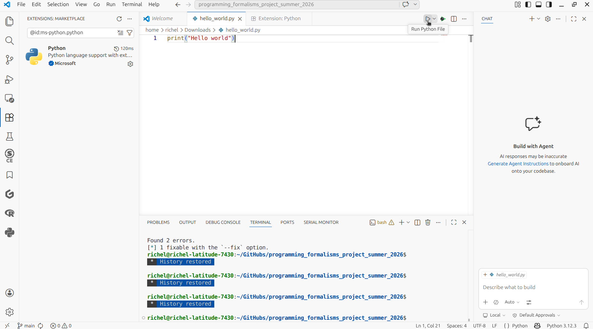
If the program shows 'Hello world', you can run Python from VS Code.
How does that look like?
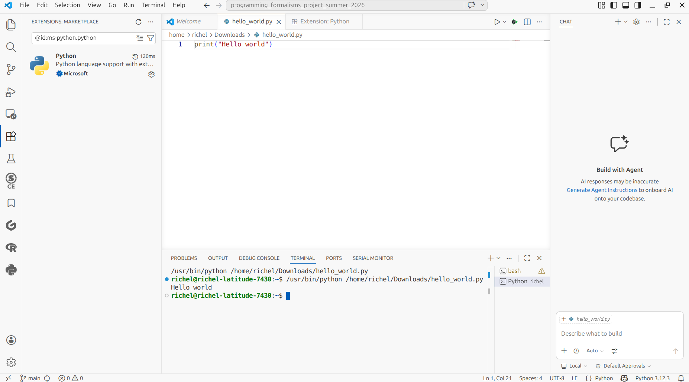
How do I know that I know the basics of Python?¶
You know enough basic Python, if:
- You can describe what a variable is
- You can change the value of a variable
- You can show the value of a variable on screen
If you do not know enough Python, chapters 1 and 2 of 'How to Think Like a Computer Scientist' is all you need.
Why do you use VS Code?¶
Because it ...
- is free (as in beer)
- works on all operating systems
- has plugins that are easy to install to develop Python code as part of a Python package
- has version control built-in
- has a built-in terminal
Can I use PyCharm? Or IDLE? Or any other IDE?¶
Yes.
However, we may not be able to help you with your IDE problems.
Within your IDE, you will need:
- To develop Python code as part of a Python package
- To use Git for version control
How do I know I have a good Zoom setup?¶
You have a Zoom good setup, if:
- you can talk freely. If not, find a room/place where you can.
- others in the Zoom room can clearly hear what you say. If not, use a microphone.
- you can clearly hear what others in the Zoom room say. If not, use a headset.
Do I really need a good Zoom setup?¶
Yes.
You will be working together with other learners a lot. Not being able to talk and/or share your screen and/or your camera is likely to make you feel excluded.
Courses¶
The 'Courses' section of the SCoRe user documentation shows an overview of many courses.
Here we highlight some more courses:
- Git:
- Python
- The 'Python' part of the NAISS 'Intro to HPC Python' Day 1
- Python programming with applications to bioinformatics.
Course teaching¶
What is the goal of the shared project?¶
See Projects for the goal of the shared project.
How is the course prepared?¶
- meetings
- lesson plans in the course material
- general lesson plans, which can be found at 'Misc } lesson_plans' of this GitHub repository
What happens to the retrospectives?¶
Retrospectives are:
- published online in unedited form at the 'Misc | evaluations' section of this GitHub repository
- discussed by the teachers after the lessons
- reflected upon, where the reflections can be found in at 'Misc | Reflections'
Why do you publish your retrospectives?¶
Because we like to be transparent.
What happens to the evaluations?¶
Evaluations are:
- published online in unedited form at 'Misc | Evaluations' of this GitHub repository.
- discussed by the teachers after the course
- reflected upon, where the reflections can be found in 'Misc | Reflections'
Why do you publish your evaluations?¶
Because we like to be transparent.
Why do you publish your reflections?¶
Because we like to be transparent.